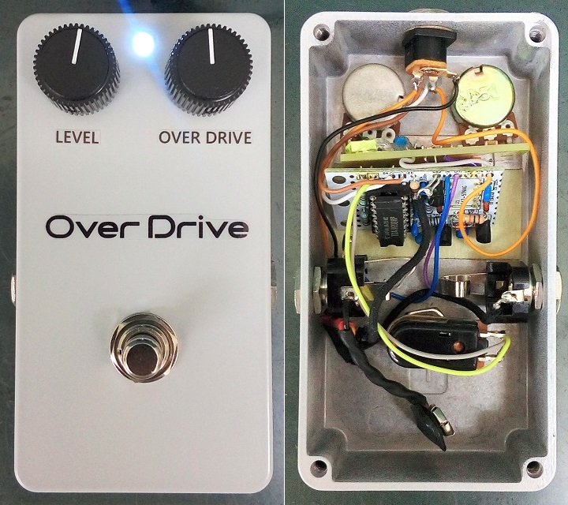
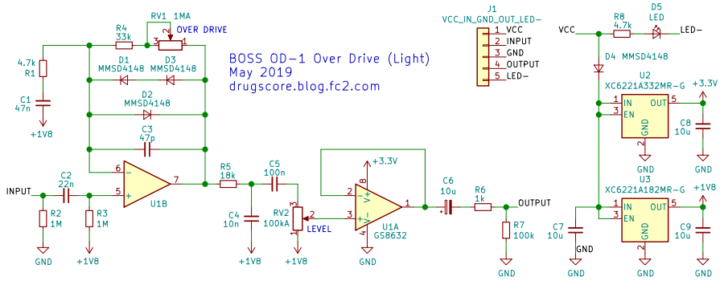
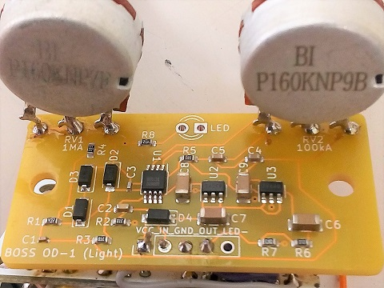

BOSS OD-1 Over Drive (Light)
2020年08月27日 カテゴリー：自作エフェクター（アナログ）

BOSS OD-1を簡略化したエフェクターです。なかなかケースを準備できず長い間基板だけ放置状態でしたが、ようやく完成させました。
▽回路図（KiCadデータはGitHubへ）

OD-1からの主な変更点は以下の通りです。
・入出力のバッファ→省略し、トゥルーバイパスリレーモジュールを使用
・出力反転→非反転
・途中のローパスフィルタ 10kΩと18nF→18kΩと10nF
・電源電圧→3.3V（レギュレータ使用）
・バイアス電圧→1.8V（レギュレータ使用）
・LEVELポット10kB→100kA、位置変更
後から気づきましたが、入力のハイパスフィルタが元の回路では10kΩと0.047uFなので、それに合わせると1MΩと470pFという値の組み合わせになります。その場合は低音域が減るので、LEVELポットはBカーブの方が調整しやすいです。（内部写真はこの改造を施した後のものとなっています。）
▽基板写真

基板はFusionPCB（https://www.fusionpcb.jp/）に注文し、部品実装も頼みました。部品点数が少ないので部品を機械で載せていないかもしれませんが、ズレがなくてきれいです。ポットは私が型番を間違えてしまい自分で無理やり取り付けたため、汚いのが目立ちます…。（注文当時5枚実装無料サービス中でしたが、現在その無料サービスは行われていません。）
レギュレータを使用しているため、たぶん電源についてはローノイズになっているでしょう。ただ音質に関してレギュレータの効果があるのかはイマイチよくわかりません。Zoom MS-50GのOverDriveと出音を比較すると、当たり前ですがよく似ています。TONE50では自作機の方がややブライトに感じられましたが、微妙な違いかなと思います。